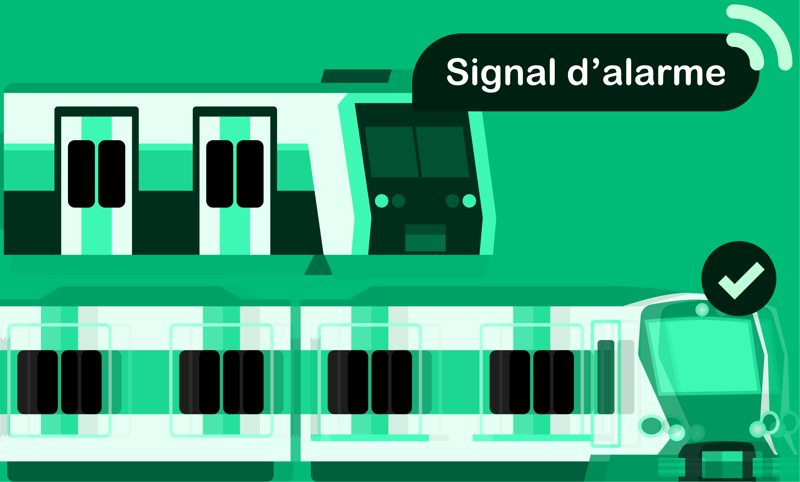
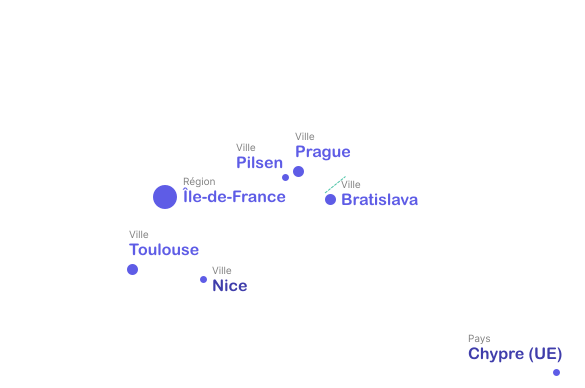

Les prochains départs apparaissent automatiquement autour de vous.

Ouvrez Wagon et retrouvez immédiatement les prochains départs autour de vous, vos lignes favorites et les informations qui comptent.
Les prochains départs apparaissent automatiquement autour de vous.

Vos habitudes sont détectées automatiquement pour mettre en avant vos lignes et vos arrêts.

Montez dans un train ou un bus : Wagon détecte automatiquement votre trajet et affiche les informations utiles.

Repérez facilement votre transport grâce aux mêmes pictogrammes qu'en station et à un aperçu du véhicule.
Wagon rassemble toutes les informations disponibles et les utilise partout dans l'app, pour que vous fassiez toujours les meilleurs choix.

Numéros de quais et longeur des trains.

Gestion des terminus partiels.

Montez au meilleur endroit dans le train pour être proche de la sortie.

Choisissez simplement : plus rapide, moins cher, moins de marche, climatisé ou moins de correspondances.

En Île-de-France, Wagon indique exactement quels tickets acheter et leur prix.
Les signalements anonymes permettent d'enrichir les informations à bord ou en station.

Signalez tous les problèmes que vous rencontrez sur votre trajet.

Les signalements sont visibles par tous.
Les trajets proposés deviennent plus pertinents.

Les signalements trop anciens finiront par disparaitre.

Nous voulons rendre Wagon accessible partout pour simplifier l’usage des transports en commun au quotidien.